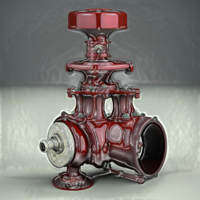

1.Определение трубопроводной арматуры
Трубопроводная арматура является необходимым элементом системы транспорта жидкостей и газов на объектах подготовки и переработки углеводородного сырья.
Трубопроводная арматура – это технические устройства, которые устанавливаются на трубопроводах, технологическом оборудовании и специальных ёмкостях и предназначены для управления потоками рабочих сред путём изменения проходного сечения внутренней части трубопровода.
Так же эти устройства обеспечивают контроль давления жидкостей и газов.
Одним из основных требований к трубопроводной арматуре является обеспечение плавного и последовательного движения потока по трубопроводам без нарушения технологического процесса перекачки.
2.Классификация трубопроводной арматуры

В технологической схеме установок для переработки углеводородного сырья применяются следующие виды трубопроводной арматуры:
- Запорная арматура (ЗА): для полного перекрытия потока рабочей среды (задвижка, кран, запорный клапан и т. п.).
- Регулирующая арматура: для управления потоками жидкостей и газа.
- Предохранительная арматура: для своевременного сброса или изменения движения потока рабочей среды при избыточном давлении в рабочей системе.
- Контрольные устройства, используются для контроля за характеристиками рабочей среды в момент замера показателей.